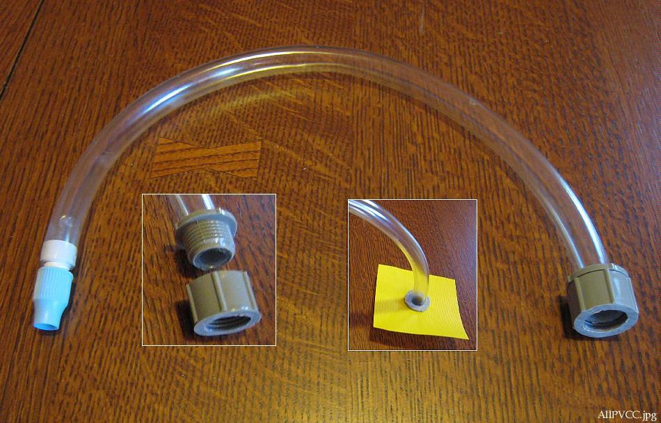

| PVC Floatation Bag ( page 4 of 8 ) | Menu Previous Page Next Page |
|

The vinyl hose is glued with HH-66 vinyl cement to the twist valve and to the 1/2" male adapter. Apply the glue to the valve and adapter, and immediately slide on the tube. No setup time is required before joining the parts. Allow the cement to cure for a few minutes. For float bags, it's best to attach the hose to the flange after the flange and two sections of the bags have been glued together .
|
|